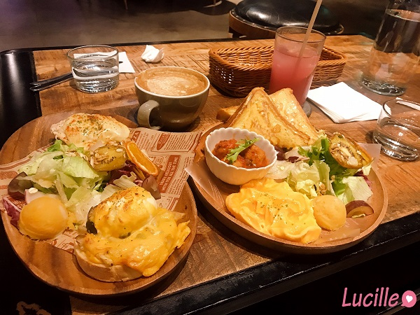

不專業食記
![[食記｜台北] 不在辦公室](https://tayinv.github.io/images/post/Food/Brunch001/2.jpg)
comments powered by Disqus
[食記｜台北] 不在辦公室
餐廳種類：早午餐 x 咖啡廳 x 甜點
目錄
先特別說明，以下資訊純屬個人觀感心得
用餐日期：2022/01/08(六)
個人綜合評價：🌕🌕🌕🌗🌑
是否會想回訪：⭕
個人心得與餐點
不在辦公室Out of office是一間複合式餐廳，有賣早午餐/漢堡/烤餅/沙拉/咖啡/蛋糕。
當初和友人在找餐廳食找到這一家，前一天打電話去訂位得知已沒有位置，因為沒有限制用餐時間，只能去現場碰碰運氣
當天到達餐廳剛好有一個沙發區還有空位，雖然吃東西不太方便，但我們還是決定在這邊試試看

友人點了燻鮭佐酪梨早午餐(左)+黑糖拿鐵
而我點了法式鹹起司早午餐(右)+蔓越莓可爾必思蘇打
👉餐點的部分算蠻好吃的，有超出預期(會覺得早午餐不就那樣嗎🤣)
炒蛋/吐司/雞肉丸都弄得不錯，蔓越莓可爾必思的話就一般般
👉但根據友人的說法，他的黑糖拿鐵很不OK
👉雖然餐點好吃，但飲品的價格上並不算太親民
飲品差不多都要150元起跳，或許是因為他不限定用餐時間，有些人會只點一杯咖啡就坐一整天，其實當天也有看到學生在那邊念書。但是他大部分飲品都不超過200元，這樣沒達到低消，還是得另外再點分東西，商人的伎倆呀😤😤😤
另外，其實當天我們也有點他們家的蛋糕，但我忘了拍照
👉蛋糕的話就很一般，我個人是覺得沒有到太好吃
最後說一下個人的評價：
以下純屬個人觀感：
餐點：🌕🌕🌕🌗🌑
價格：🌕🌕🌗🌑🌑
整潔：🌕🌕🌕🌕🌑
環境：🌕🌕🌕🌕🌑
服務：🌕🌕🌕🌕🌑
個人綜合評價：🌕🌕🌕🌗🌑
至於會不會再回訪，他們家不限用餐時間真的蠻不錯的，如果哪天有需要在咖啡廳待很久的話我會考慮來這家😂
回到目錄
店家資訊
- 電話地址
電話：02-2760-0045
- 營業時間
周一~周五：7:30~20:00
周六、日：10:00~20:00
- 低消
每人低消NT$200元，另收服務費10%
餐點供應時間為11:00-20:00
- 用餐時間限制：
不限時
回到目錄